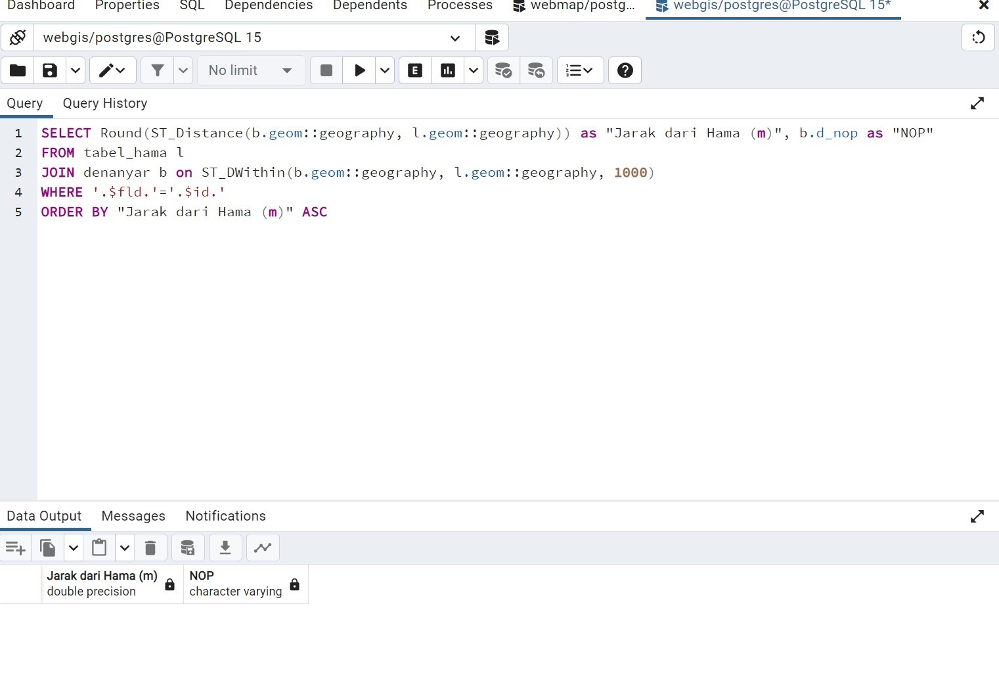
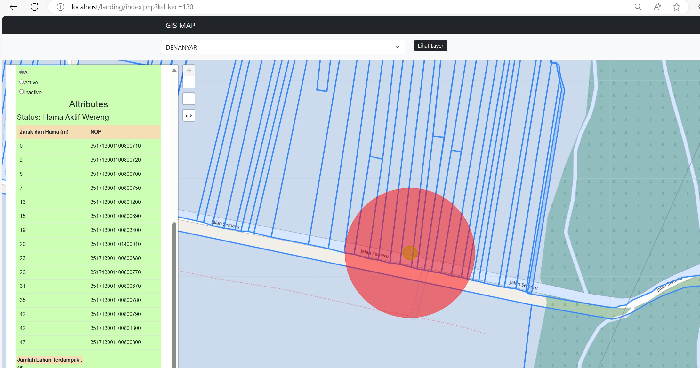

Langkah Awal Untuk Membuat Query dan Melakukan Join Pada Tabel Spasial
Dengan menggunakan Query SELECT Round(ST_Distance(b.geom::geography, l.geom::geography)) untuk jarak yang dibulatkan antara geometri dalam meter yang akan mengukur antara jarak pusat ke bidang yang terpengaruh dan menggunakan ON ST_DWithin(b.geom::geography, l.geom::geography) menentukan kondisi untuk join berdasarkan area untuk mencangkup 2 tabel geometri.
Hasil Dari Visualisasi Data Berdasarkan Buffer Point yang telah ditentukan
Proses untuk mencari menggunakan function yang akan memuat properties.feature.id_hama kemudian buffer akan menyesuaikan lebar dari properti yang dimiliki tabel_hama ditandai dengan buffer warna merah. Lewat proses ini akan menampilkan data antara 2 tabel hubungan atara dua tabel. Dalam kasus ini memiliki sekenario sebaran titik hama pertanian dan bidang perkebunan untuk mengetahui berapa jumlah bidang yang terbengaruh hama.